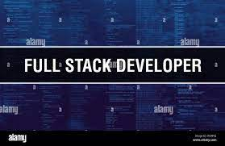

Core Competencies

UX/UI Design
Creating intuitive, user-centered designs that enhance engagement and satisfaction. I specialize in wireframing, prototyping, and implementing responsive interfaces that deliver exceptional experiences across all devices.

Full Stack Development
Proficient in both frontend and backend technologies, enabling me to build complete, integrated solutions. My expertise spans modern JavaScript frameworks, API development, database design, and cloud infrastructure.

Technical Leadership
Experienced in guiding development teams, setting technical direction, and ensuring project success through effective planning, communication, and implementation of best practices in software development.